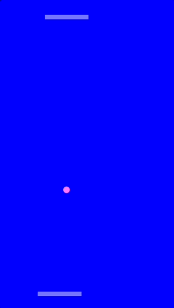
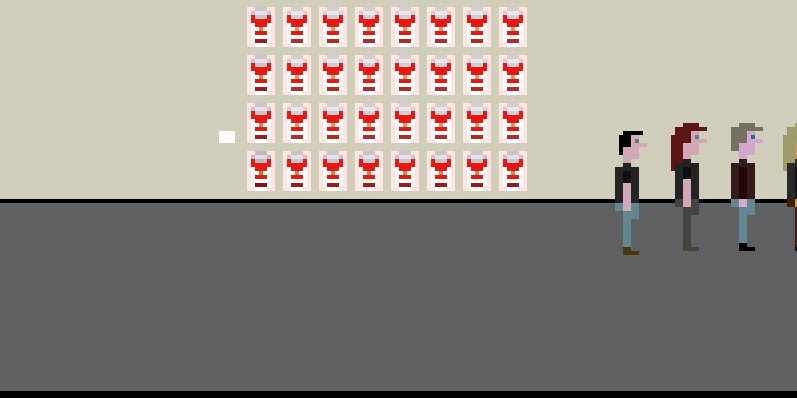
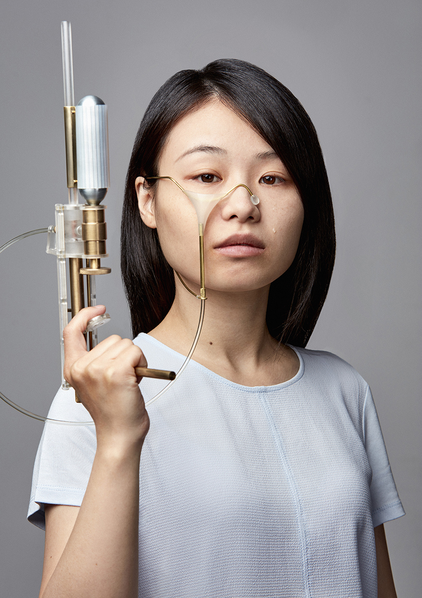
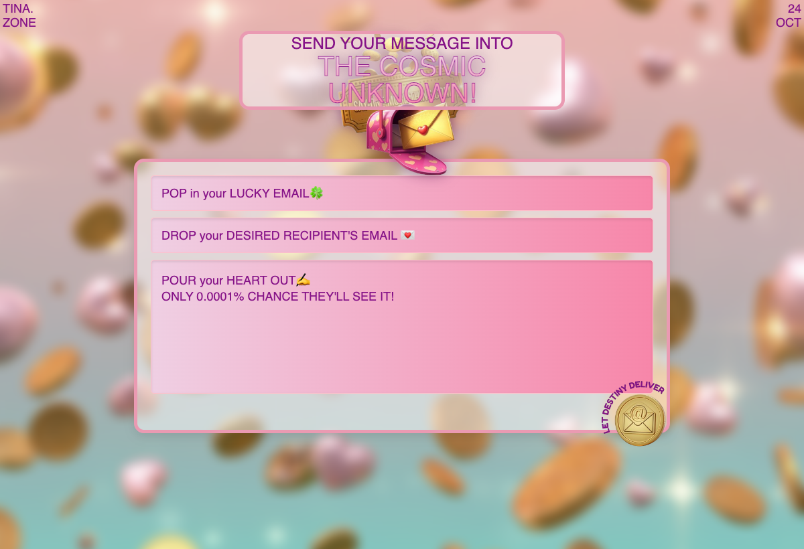
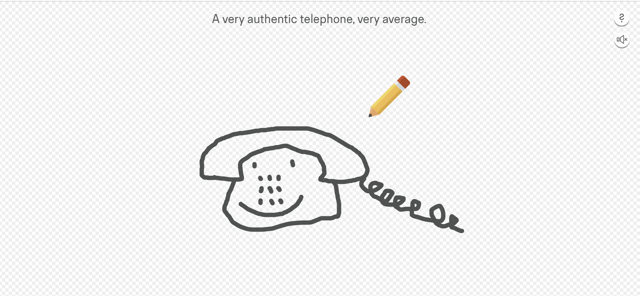
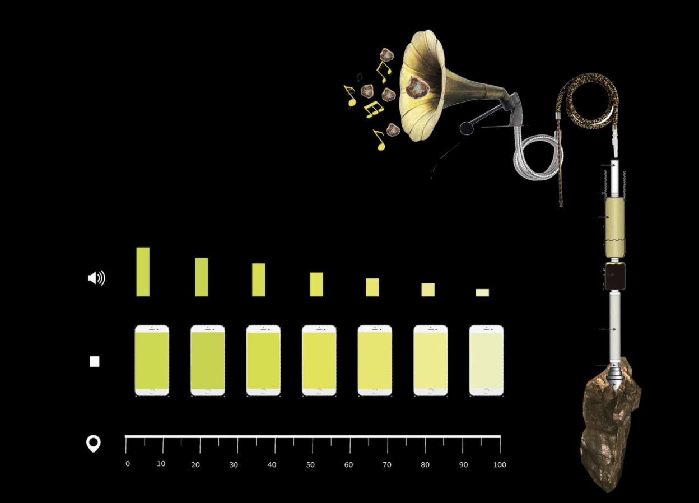

Qu’est-ce qui vous a semblé difficile ou inspirant ?
Comment avez-vous trouvé l’expérimentation par le code ?
Qu’est-ce que la friction en design ?
La friction désigne une résistance dans l’interaction : un délai, un effort physique ou une situation qui demande d’ajuster sa manière d’agir.
Le design numérique cherche souvent à rendre les actions rapides et prévisibles. Avec Designing Friction, Luna Maurer et Roel Wouters proposent de donner une place à ce qui résiste : le corps, les émotions, l’incertitude et la relation aux autres.
Exemple possible : une interface exige que deux personnes coordonnent leurs gestes pour agir. L’effort de s’ajuster devient une partie de l’expérience : il peut susciter de l’attention, une négociation ou une rencontre.
Emoticons Don’t Have Wrinkles
Filmée par un téléphone fixé devant son visage, Luna Maurer confronte l’expression standardisée de l’emoji à la complexité de ses émotions.
Discussion — La friction dans votre pratique
Dans un projet que vous avez conçu, quelle friction avez-vous cherché à supprimer ? Qu’avez-vous gagné ou perdu en rendant l’interaction plus fluide ?
La performance vous donne-t-elle envie de reconsidérer une décision de design ? Où l’attente, l’effort du corps ou l’imprévu pourraient-ils enrichir l’expérience ?
Pour qui cette friction aurait-elle du sens, et pour qui deviendrait-elle un obstacle ? Comment préserver le choix de participer ?
2. Délai · As Slow As Possible

Pong, Breakout et Missile Command sont ralentis à l’extrême. L’attente entre les événements devient la matière du jeu et change notre attention au mouvement et au temps.
2. Délai · The Artist Is Present

Pour s’asseoir face à Marina Abramović, le joueur doit patienter dans une file en temps réel. Le délai exige de la patience et de l’attention : il faut avancer avec la file pour garder sa place.
Cinq idées de départ
Inconfort — découvrir d’autres manières d’agir.
Délai — laisser place à l’attente et au désir.
Engagement du corps — mobiliser les sens et la présence physique.
Non-positif — accueillir le doute, la complexité et la différence.
Imprévisibilité — sortir des comportements habituels.
Les projets suivants proposent une lecture de ces principes. Une œuvre peut en traverser plusieurs.
1. Inconfort · Eyecam
Une webcam en forme d’œil humain cligne, regarde autour d’elle et réagit à notre présence. Son apparence rend la surveillance tangible et peut provoquer un malaise face à l’appareil qui nous observe.
1. Inconfort · Tourmente
Le souffle dans le micro du téléphone fait varier le vent qui frappe un visage filmé. Le plaisir de contrôler l’image se mêle à l’inconfort de voir ce visage malmené.
3. Engagement du corps · A Heart from Space
Les participants se déplacent pour former ensemble un cœur à partir de leurs positions GPS. Leurs corps dessinent l’image : chacun doit ajuster sa position aux mouvements des autres.
4. Non-positif · Tear Gun

Ce dispositif recueille les larmes, les congèle et les projette. Il transforme la vulnérabilité en moyen d’expression et donne une place à une émotion difficile dans l’interaction.
4. Non-positif · Say One More Thing

On écrit à quelqu’un, mais le message n’a qu’une chance sur un million d’être envoyé. Cette communication incertaine met en jeu le désir d’être entendu, le doute et la vulnérabilité.
5. Imprévisibilité · Do Not Draw a Penis

On dessine librement, mais un système de reconnaissance commente et censure certaines formes. L’interdit invite à tester ses limites et à inventer des façons de contourner la règle : l’imprévisibilité vient des manières de jouer avec le système.
5. Imprévisibilité · Piano Stairs
Les marches d’un escalier de métro produisent des notes de piano. Un trajet quotidien devient une occasion de s’arrêter, d’improviser et de jouer : l’imprévisibilité tient aux manières de s’approprier le lieu.
Projet final — Prototype d’expérience interactive numérique
À partir de vos expérimentations en code créatif, concevez une interaction qui explore une forme de friction. Situez-la dans un contexte d’usage ou une situation imaginée.
Les quatre composantes du projet
Un prototype numérique que l’on peut essayer.
Une représentation libre de l’expérience dans son contexte.
Au moins un test avec observations et discussion.
Une documentation du processus : journal et commits.
1. Le prototype — Une interaction à essayer
Définissez une entrée : souris, clavier, toucher, caméra, son…
Élaborez la réponse du système et choisissez une piste de friction parmi les cinq principes.
Poursuivez un exercice ou commencez un nouveau sketch en p5.js. Une autre technologie est possible selon votre projet.
Donnez au projet un titre, une courte description et les indications pour l’essayer.
Il reste quatre cours : concentrez-vous sur une interaction fonctionnelle. Votre intention peut évoluer au fil des essais.
À remettre : le prototype sur GitHub Pages et son code dans le dépôt.
2. Cartographie de l’expérience — Une forme libre
Situez votre prototype dans un contexte réel ou imaginé. Représentez ce qui se passe et ce que l’expérience pourrait faire ressentir.
Le contexte : qui participe, où et dans quelle situation ?
L’interaction : que fait la personne et comment le système répond-il ?
L’expérience : quel rythme, quelle ambiance, quelles sensations ou tensions recherchez-vous ? Où intervient la friction ?
La forme est libre : vidéo, collage, dessin, storyboard, carte sonore, cartographie UX classique ou combinaison de médias. Choisissez une forme expressive qui aide à comprendre votre projet.
À remettre : cette représentation dans votre dépôt, avec les indications nécessaires pour la comprendre.
Collage · Exposeia

Ce projet spéculatif propose de rendre la contamination du sol perceptible par des sons sur les téléphones. Le collage relie le sol, un dispositif imaginé et les retours sonores et visuels : il rend le principe et son contexte matériel lisibles.
Storyboard · The Planet Bang
Ce storyboard imagine un jeu de planètes virtuelles sur une place publique. Il relie les gestes des participants, les réponses du dispositif et les réactions des passants pour montrer comment l’interaction prend place dans la vie du lieu.
Collage vidéo · Face Machine
Un exemple de collage vidéo pour situer un prototype et donner à voir l’expérience envisagée. Le montage permet de relier le dispositif, l’interaction et son contexte.
3. Le test — Observations et discussion
Faites essayer le prototype à au moins une personne.
Situez l’expérience, puis laissez la personne explorer le prototype.
Observez ses gestes, ses hésitations, ses initiatives et ses réactions.
Discutez ensuite de ce qu’elle a vécu, ressenti et compris.
Notez ce que ces retours vous donnent envie de modifier, de conserver ou d’explorer.
À documenter dans le journal : vos observations, les retours de la personne et votre réflexion après le test. Distinguez ces trois éléments.
4. La documentation — Journal et commits
Pendant le travail : faites un commit aux étapes significatives. Nommez le changement et expliquez ce qui motive votre décision.
En fin de séance : notez vos essais, observations, idées et références dans le journal. Reliez-les à l’évolution de votre intention.
À la fin du projet : revenez sur les choix qui ont compté, les pistes abandonnées, ce que vous avez compris et ce que vous aimeriez poursuivre.
Ajoutez les captures, dessins, liens ou autres traces utiles pour comprendre votre démarche depuis le début de l’atelier.
À remettre : le journal, les traces du processus et l’historique des commits dans votre dépôt GitHub.
Présentation et remise — Dates et liens
14 décembre · Présentation en classe Présentez le prototype et son contexte pendant la seconde moitié du cours.
21 décembre · Documentation finale Rassemblez dans votre dépôt le code, la cartographie, le journal, les retours du test et les traces du développement.
Envoyez par courriel les deux liens :
Votre dépôt GitHub avec la documentation.
Votre prototype accessible sur GitHub Pages.
Retour sur l’exercice — Le synthé main
Comment avez-vous trouvé le geste, l’image et le son ensemble ?
Qu’est-ce qui vous donnait du contrôle, ou vous faisait hésiter ?
Qu’aimeriez-vous changer ? Qu’est-ce qui reste flou dans le code ?
Retour dans le code
Ouvrons le sketch ensemble pour comprendre ce qui se passe entre la détection de la main, les conditions, le mouvement du cercle et le son.
Atelier — Explorer à partir du synthé
Si le tutoriel n’est pas terminé : regardez la vidéo du cours 2 et réalisez le sketch en classe. Demandez de l’aide au besoin.
Si votre sketch fonctionne, choisissez une piste à explorer :
Modifier des paramètres : vitesse, taille, couleurs ou son.
Relier la détection de la main au sketch de dessin : contrôler le dessin avec la main plutôt que le cercle.
Imaginer dans quel contexte cette interaction pourrait se retrouver et quel principe de friction pourrait y être exploré.
Notez ce qui vous intéresse dans vos essais et gardez une version avec un commit. Je suis disponible pour vous aider à modifier le code.
Fin de séance — Journal et push
Notez la modification essayée et ce que vous avez observé en interagissant. Y voyez-vous un lien avec un des principes de friction ?
Gardez les idées, les questions et les références qui vous intéressent pour le projet final.
Ajoutez une capture ou un lien de commit utile, puis faites un commit et un push.
Quelques ressources à explorer
Nahuel Gerth — Projets de design graphique et de code créatif.